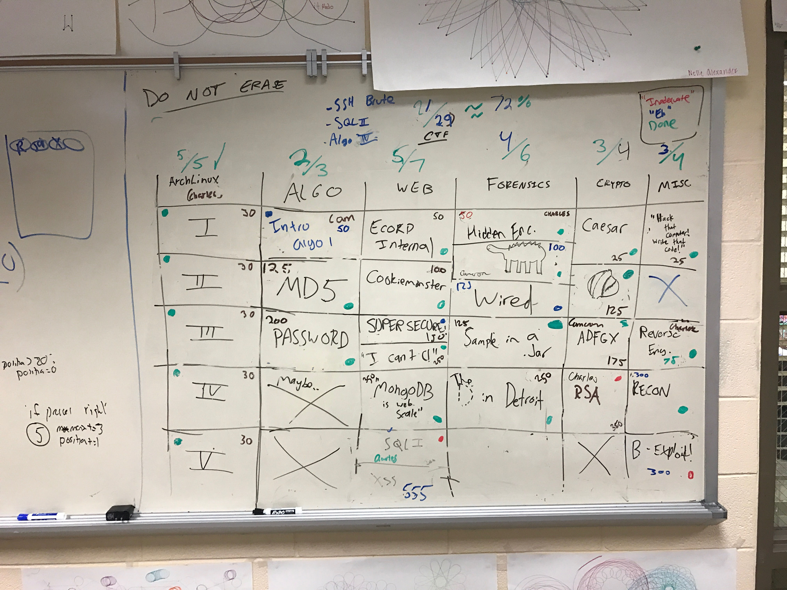
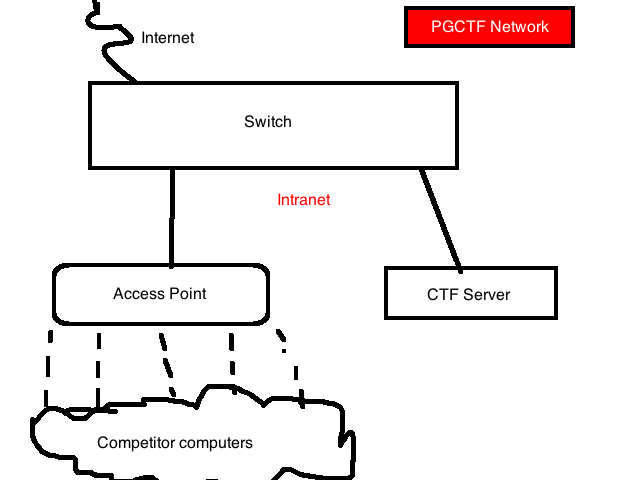

On 28 January, we (Charles Truluck, Cameron Hay, and myself) ran the inaugural Porter-Gaud CTF competition, an introductory cyber-security red team competition designed to give high schoolers from around South Carolina a hands-on experience with security concepts.
Inception
After competing in the NodeSC 2016 CTF and PCDC here in Charleston, we immediately knew that we wanted to run our own capture-the-flag competition. We went to Doug Bergman, the computer science chair at Porter-Gaud, and began to make the idea a reality.
Designing the Problems
My personal Computer Science III (a semester class at Porter-Gaud) was to design and create the competition, which proved to be time-consuming.
While the problems were presented in a conquer-the-world style using the FBCTF platform on the day of the competition, we used the layout of a Jeopardy board to keep track of progress and ensure equality between categories (originally, problems ranged from 50-500 points, but the scale was eventually changed to 25-350 points).
Each problem was designed and then developed by one of the three of us.
As web is my specialty, I took that and the algorithm category, while Charles developed the ArchLinux category. We worked together to fill the forensics/crypto/misc categories.

In this picture, you can see the Jeopardy board that lived in the Porter-Gaud computer lab from September-January with all of the problems from the competition, along with a few that did not make it to the competition for various reasons (difficulty, time constraints, too many problems)
After developing a problem, we would test it on each other for difficulty and usability.
Reaching Out
The hardest part of organizing PGCTF was reaching out and getting teams to sign up.
We officially announced the competition in early-November, but we did not have enough teams to successfully run the competition until early January. Teams continued rolling in up until four days before the competition.
Next year, we're planning to improve our outreach.
Tech Week
(warning: technical section)
The final step in putting together the CTF was setting up the infrastructure.
While we initially planned to have multiple servers (scoreboard, web problems, file server), we abandoned this idea due to a lack of resources and used one server running Ubuntu.
Quality Assurance
During the pre-competition week, we made it a goal to work through all of the problems to ensure that they were solvable, the anticipated difficulty, and fun to solve.
This led us to change point values of a few problems (ADFGX, for example).
Problem Servers
We used Docker to handle having multiple interfaces and therefore multiple IP addresses leading to different websites. Docker also allowed for us to isolate problems for each other due to the exploitative nature of the competition (for example, Imgur 2.0 was solvable by obtaining a shell on the host server)
For the web problems and Algorithm 1, we had to host webservers. We didn't want to bloat the ports on one host, so we used a trick with Docker and interfaces to create an illusion of there being multiple servers.
In order to create these interfaces, we used this guide, which led to:
$ ip link add icantc type bridge
$ ip addr add 10.0.0.21 dev icantc
$ ip link set icantc up
Becuase of an issue with the /etc/network/interfaces file (most likely caused by syntax issues) discovered the night before the competition, we wrote a script that we would run whenever the master server came up.
Dockerfiles
In order to set up the problem servers, we had to set up Dockerfiles for each of the web-based problems. While Apache/PHP Dockerfiles were pretty easy, we were unable to fully setup NodeJS ones. We wound up having to manually start the NodeJS instance within the Docker containers on competition day.
Wifi or Ethernet?
During the pre-competition week, we had to build the full network. The biggest disagreement between the PGCTF Team was whether to use WiFi or to stick to Ethernet. While Wifi would be more convenient, it was more prone to breaking during the course of the competition. Ethernet would be more stable, but users with newer computers may require an adapter.We eventually settled on using Wifi with a Switch in the room if a team opted to use Ethernet.
The Nightmare of DHCP
One problem that came up after creating these interfaces was that computers connecting to the access point would be assigned the same IP as one of our defined interfaces on the server, and would not be able to connect to anything (and would break the problem). We solved this by modifying the DHCP scope to exclude the 10.1.10.20-30 IP range, which was dedicated to problems.
 Here's an MS-Paint rendition of the network diagram.
Documents
On Friday night, we finalized the competition scope and printed the documents that were distributed to each team with rules/schedule/scope of the competition. We also finalized the intro powerpoint and the itinerary for the day.
Competition Day
Arriving at Porter-Gaud around 8:45 for the 9:00 start, I was impressed to see that teams had already begun arriving and were setting up their team spaces.
As I walked in and noticed the list of IP addresses both printed on each team's table and on the whiteboard, I realized that the web servers were all up and could be exploited before the intended start time. Luckily, I realized this before the teams did and shut them down.
At 9:15, about fifteen minutes before the originally planned start time, all teams were ready to go and we began the competition.
Though there were a few mishaps throughout the day (a file missing from a problem, for example), everything ran extremely smoothly.
Teams solved the Tillson Galloway recon problem much faster than I expected them to, and it was very rewarding watching teams finally solve the last step of the problem.
The D in Detroit was also a favorite of both organizers and participants, and all teams eventually solved it (though the room was filled with static noises for the first two hours).
While I expected the competition to die down around 1:30 as in past CTFs I've competed in, teams stayed interested and kept the fight for first/second place intact until the last minute.
After the Competition
Survey
A few days after the competition, I sent out an email with resources to future CTFs and an anonymous survey for PGCTF. The survey truly will help us outline next year's competition as it was the most direct way to give feedback.
A couple of stats from the survey:
Favorite problems were:
* ADFGX (Crypto)
* Tillson Galloway (Recon/Misc)
* The D in Detroit (Forensics)
Afterthoughts
Lessons Learned
Proofreading and testing the problems before the competition is essential. There were two instances throughout the day where a web problem link was either wrong or the problem was missing entirely.
We also found that one area we can improve in is evaluating problem difficulty. There were instances where problems that were meant to be easy ended up being much harder than anticipated, which steered teams away from the category at large (E-Corp Internal and ArchLinux, for example). We'll try to provide better resources for training next year, and we may release challenge problems throughout the year.
Next Year
Next year, we also want to have a more interactive experience the day of the game, expanding upon the MS08-067 Windows XP image released mid-game in order to keep the game lively.
What's Next?
The Dangling Pointers will be competing in EasyCTF next week as well as The Palmetto Cyber Defense Competition on 8 April.
Thank You
I'd like to close this writeup with a thank you to the following people for their help with the event:
- Charles Truluck, for both helping build and setup the server as well as for building and testing problems
- Cameron Hay, for work on the cryptography category and support for teams on the day of the event.
- Bryan Luce and Doug Bergman, for all around support and motivation for running the event, advising us during the production of it, and handling communication with the school administration in order to legitimize the event.
- Phil Zaubi, for setting up the final networking component of the event.